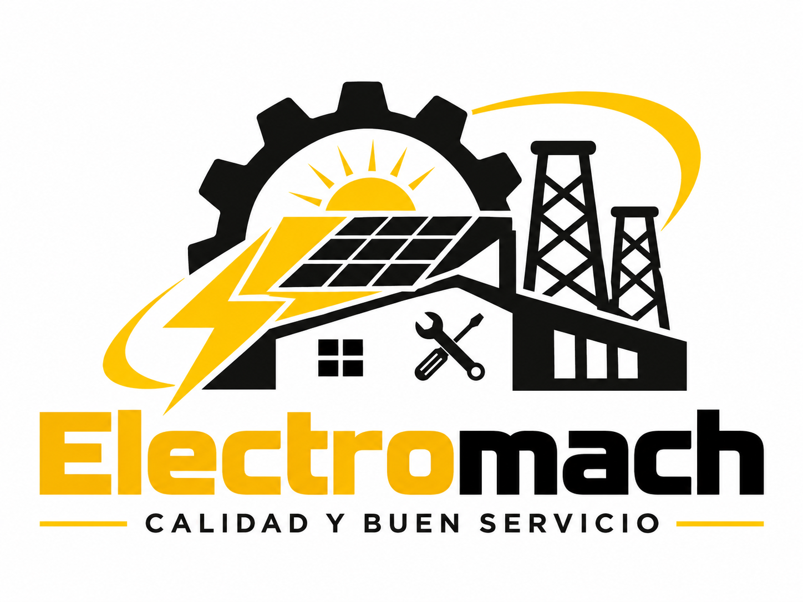
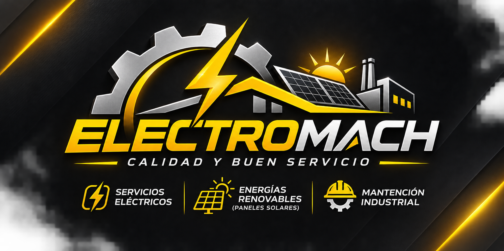

01 / ENERGÍA SOLARMás posibilidades.
Mejor energía.
Mejor energía.
Soluciones que aprovechan el potencial del sol.

Hablemos de tu proyecto ↗ELECTRICIDAD · ENERGÍA SOLAR · INDUSTRIA
Instalaciones eléctricas, soluciones solares y mantenimiento industrial para que tu operación siga avanzando.
01 / QUÉ HACEMOS
Una respuesta clara para la energía, las instalaciones y la continuidad de tu operación.
Soluciones para instalaciones, ampliaciones y mejoras de sistemas eléctricos.
Paneles solares y soluciones de energía renovable para tu proyecto.
Cuidado de instalaciones y equipos para acompañar las necesidades de tu operación.
02 / CÓMO TRABAJAMOS
Cuéntanos qué necesitas, dónde y cuál es el objetivo de tu proyecto.
Revisamos los requerimientos para definir el alcance de la solución.
Acordamos una propuesta, los trabajos y las condiciones de ejecución.
Coordinamos la ejecución y las necesidades de mantenimiento.

ELECTRICIDAD + ENERGÍA + INDUSTRIA03 / SOMOS ELECTROMACH
Reunimos servicios de electricidad, energías renovables y mantenimiento industrial para dar respuesta a distintas necesidades en un solo lugar.
Comenzamos por entender tu proyecto y definimos contigo el trabajo que necesitas.
Conversemos sobre tu idea ↗04 / COMENCEMOS
Escríbenos para conversar sobre tu proyecto, solicitar una cotización o resolver una consulta técnica.
PROYECTOS Y COTIZACIONES